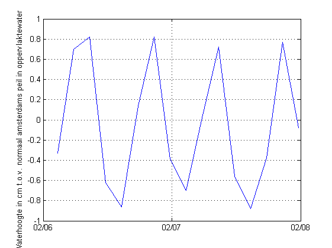
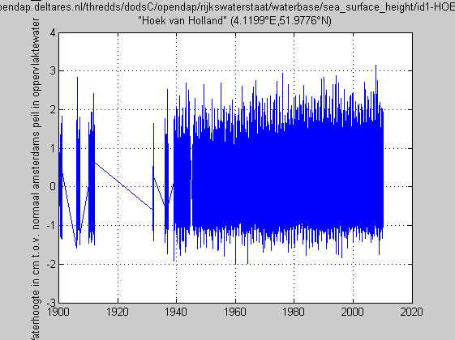

Contents
- NC_CF_STATIONTIMESERIES_TUTORIAL how to read and subset a netCDF time series file
- subset > 100 year Rijkswaterstaat time series at Hoek van Holland
- get full coordinate sticks
- Determine indices of subset based on the the subregion you want
- get subset
- plot
- This 15 Mb dataset can also be loaded as a whole at once using a dedicated function
NC_CF_STATIONTIMESERIES_TUTORIAL how to read and subset a netCDF time series file
%See also: SNCTOOLS, NC_CF_STATIONTIMESERIES,... % NC_CF_GRID_TUTORIAL,... % NC_CF_STATIONTIMESERIES_WRITE_TUTORIAL
subset > 100 year Rijkswaterstaat time series at Hoek van Holland
The full timeseries (15MB) is a bit slow to handle via OPeNDAP.
D.url = 'http://opendap.deltares.nl/thredds/dodsC/opendap/rijkswaterstaat/waterbase/sea_surface_height/id1-HOEKVHLD.nc';
nc_dump(D.url)
URL http://opendap.deltares.nl/thredds/dodsC/opendap/rijkswaterstaat/waterbase/sea_surface_height/id1-HOEKVHLD.nc {
dimensions:
locations = 1 ;
name_strlen1 = 8 ;
name_strlen2 = 16 ;
time = 1483599 ;
variables:
// Preference 'PRESERVE_FVD': false,
// dimensions consistent with ncBrowse, not with native MATLAB netcdf package.
char station_id(locations,name_strlen1), shape = [1 8]
station_id:long_name = "station identification code"
station_id:standard_name = "station_id"
...get full coordinate sticks
D.datenum = nc_cf_time(D.url,'time');
Determine indices of subset based on the the subregion you want
OPT.datenum = datenum(1953,1,25 + [0 14]); ind.datenum = find(D.datenum > OPT.datenum(1) & D.datenum < OPT.datenum(2));
get subset
note: nc_varget is zero-based note: the 1D timeseries has two dimensions, 1st dimension is dummy
D.datenum = D.datenum(ind.datenum); start = [0 ind.datenum(1)-1];% use -1 to get from 1-based Matlab to 0-based netCDF index !! count = [1 length(ind.datenum)]; D.z = nc_varget(D.url,'sea_surface_height' ,start,count); M.z.units = nc_attget(D.url,'sea_surface_height','units'); M.z.long_name = nc_attget(D.url,'sea_surface_height','long_name');
plot
plot(D.datenum,D.z); datetick('x') grid on ylabel([M.z.long_name,' [',M.z.units,']']) print('-dpng',['Hoek_van_Holland_time_',datestr(OPT.datenum(1)),'_',datestr(OPT.datenum(2))])
This 15 Mb dataset can also be loaded as a whole at once using a dedicated function
figure nc_cf_stationtimeseries(D.url,'sea_surface_height','plot',1);